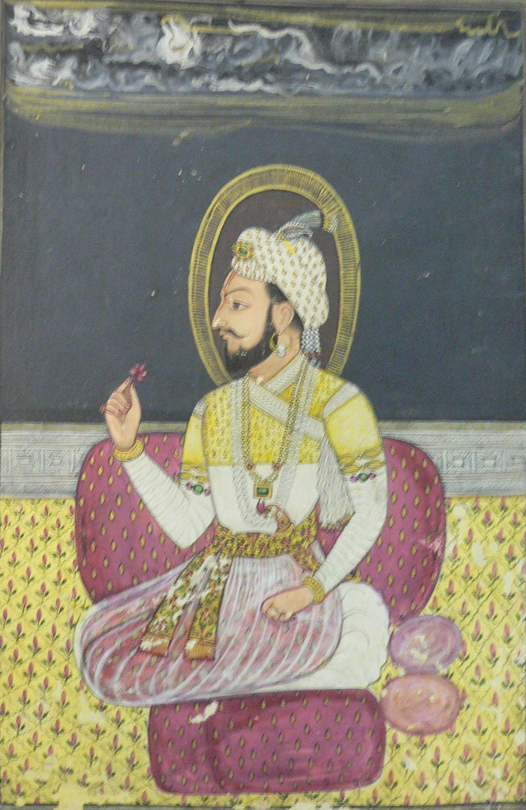
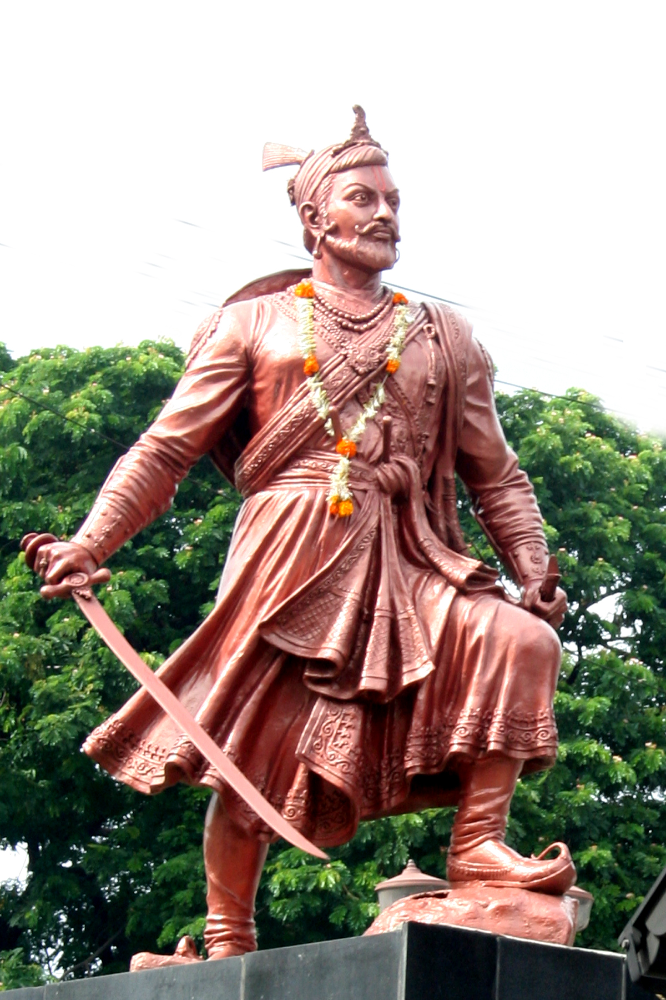

१२८ लढायांमध्ये अजिंक्य, संस्कृत व ब्रजभाषेचे प्रकांड पंडित, आणि औरंगजेबाच्या ५ लाख फौजेला सह्याद्रीत पाणी पाजणारे अद्वितीय धुरंधर धर्मवीर.

१७ व्या शतकातील अस्सल समकालीन चित्र. तेजस्वी डोळे, रुबाबदार व्यक्तिमत्त्व आणि स्वराज्याप्रती दुर्दम्य निष्ठा प्रतिबिंबित करणारे शंभूराजांचे ऐतिहासिक रूप.


१४ मे १६५७ रोजी किल्ले पुरंदरावर छत्रपती शिवाजी महाराज आणि महाराणी सईबाई यांच्या पोटी संभाजीराजांचा जन्म झाला. वयाच्या अवघ्या दुसऱ्या वर्षी मातोश्रींचे छत्र हरपले, परंतु आजी जिजाऊसाहेबांनी त्यांना शिवरायांप्रमाणेच तेजस्वी संस्कार दिले.
संभाजीराजे हे केवळ पराक्रमी योद्धा नव्हते, तर संस्कृत, मराठी, ब्रज, फारसी, इंग्रजी, पोर्तुगीज यांसह तब्बल १४ भाषांवर त्यांचे प्रभुत्व होते. वयाच्या अवघ्या १४ व्या वर्षी त्यांनी संस्कृत भाषेत राजनीतिविषयक 'बुधभूषणम्' हा अलौकिक ग्रंथ लिहिला. याशिवाय त्यांनी ब्रजभाषेत 'नखशिखा', 'नायिकाभेद' आणि 'सातसतक' हे काव्यग्रंथ रचले.
| ग्रंथाचे नाव | भाषा | रचना काळ | मुख्य विषय व आशय | ऐतिहासिक महत्त्व |
|---|---|---|---|---|
| बुधभूषणम् | संस्कृत | वयाच्या १४ व्या वर्षी (१६७१) | राजनीती, राजाचे कर्तव्य, मंत्री निवड, दुर्ग व्यवस्थापन, गुप्तहेर यंत्रणा व न्यायदान. | कौटिल्याच्या अर्थशास्त्रानंतर भारतीय राजनीतीवरील सर्वोत्तम प्रमाणग्रंथ. |
| नखशिखा | ब्रजभाषा | किशोरावस्था | श्रीकृष्णाचे सौंदर्य, भक्ती आणि अलंकारयुक्त सौंदर्यशास्त्रीय वर्णन. | मराठा राजाच्या हिंदी व ब्रज साहित्यावरील उच्च दर्जाच्या प्रभुत्वाचा पुरावा. |
| नायिकाभेद | ब्रजभाषा | किशोरावस्था | भारतीय नाट्यशास्त्र व काव्यातील विविध नायिकांच्या मनोभावांचे सूक्ष्म विश्लेषण. | शास्त्रीय काव्यातील सखोल ज्ञान आणि संवेदनशीलता. |
| सातसतक | ब्रजभाषा | युवावस्था | सातशे नीतिपर दोहे — धर्म, नीती, मानवी स्वभाव आणि शौर्याचे मार्गदर्शन. | कवि भूषण यांच्या समकालीन उच्चकोटीची रचना. |
९ वर्षांच्या कारकिर्दीत छत्रपती संभाजी महाराजांनी मुघल, आदिलशाही, कुतुबशाही, सिद्दी आणि पोर्तुगीजांविरुद्ध एकाच वेळी १२८ लढाया लढल्या आणि एकाही लढाईत पराभव पत्करला नाही:
| वर्ष | मोहीम / लढाई | शत्रू सत्ता व सेनापती | रणनीती व डावपेच | ऐतिहासिक परिणाम |
|---|---|---|---|---|
| जानेवारी १६८१ | बुऱ्हानपूर लुट | मुघल सुभेदार काकर खान | अत्यंत वेगाने खानदेश पार करून मुघलांच्या मध्यवर्ती व्यापारी केंद्रावर आकस्मिक छापा | कोट्यवधींची लूट स्वराज्यात आणली; मुघल सम्राटाचे आर्थिक कंबरडे मोडले. |
| १६८२–१६८८ | रामशेजचा ऐतिहासिक वेढा | मुघल सरदार शहाबुद्दीन खान, बहादूर खान | केवळ ६०० मावळ्यांनी लाकडी तोफांच्या साहाय्याने मुघलांची ५०,००० फौज अडवून ठेवली | ६ वर्षे वेढा घालूनही मुघलांना किल्ला जिंकता आला नाही; मुघल सैन्याचे प्रचंड खच्चीकरण. |
| १६८२ | जंजिरा मोहीम | सिद्दी खैरियात व इंग्रज | समुद्रात खडकांचा भराव घालून पूल बांधण्याची अचाट योजना, जंजिऱ्यावर तोफांचा मारा | सिद्दीचे नाक कापले; मात्र मुघलांच्या आक्रमणामुळे वेढा मागे घ्यावा लागला. |
| नोव्हें. १६८३ | गोव्याची मोहीम (जुवेची लढाई) | पोर्तुगीज व्हाईसरॉय फ्रान्सिस्को दी ताव्होरा | समुद्राच्या भरतीच्या वेळी स्वतःचा घोडा पाण्यात घालून थेट सेंट एस्टेव्हम बेट जिंकले | पोर्तुगीजांचा संपूर्ण पराभव; व्हाईसरॉय जेजुरीच्या खंडेरायाला शरण आला. |
| १६८५ | गुजरात व भडोच मोहीम | मुघल सुभेदार | नर्मदा नदी पार करून भडोच शहरावर वेगवान हल्ला | मुघलांची प्रचंड संपत्ती स्वराज्यात दाखल. |
पोर्तुगीज व्हाईसरॉय ताव्होराने फोंडा किल्ल्यावर हल्ला केला होता. संभाजीराजे स्वतः धावून आले. भरतीच्या वेळी समुद्राच्या खाडीत स्वतःचा घोडा उडी मारून घालून संभाजीराजांनी सैन्यासह खाडी पार केली. पोर्तुगीज व्हाईसरॉयचा घोडा मारला गेला आणि तो कसाबसा पळून गेला. पोर्तुगीज गव्हर्नरने संत फ्रान्सिस झेवियरच्या शवपेटीसमोर रडून प्रार्थना केली होती!
पोर्तुगीज पाशवी सत्तेचा धुव्वानाशिक जवळील रामशेज हा एक छोटा किल्ला. मुघल सेनापतीने औरंगजेबाला सांगितले होते: "हा किल्ला मी दोन तासांत जिंकून देतो." परंतु संभाजीराजांच्या ६०० मावळ्यांनी तब्बल ६ वर्षे मुघलांच्या ५०,००० फौजेला आणि शेकडो तोफांना निष्प्रभ केले. लाकडी तोफा बनवून त्यावर चामडे चढवून दगड मारणारे मराठे पाहून मुघल थक्क झाले.
जगातील सर्वात प्रदीर्घ किल्ला वेढाफेब्रुवारी १६८९ मध्ये संगमेश्वर येथे एका अंतर्गत फितुरीमुळे संभाजीराजे आणि कवी कलश यांना मुघल सरदार मुकर्रब खान याने अचानक वेढा घालून पकडले. त्यांना बहादूरगड (पेढगाव) येथे औरंगजेबासमोर आणले गेले.
औरंगजेबाने संभाजीराजांसमोर अटी ठेवल्या: "स्वराज्याचे सर्व किल्ले आणि खजिना माझ्या स्वाधीन करा आणि तुमचा धर्म बदला, तरच प्राण वाचतील!"
परंतु शिवरायांच्या छाव्याने गर्जना केली:
संतप्त औरंगजेबाने संभाजीराजांवर ४० दिवस अमानुष शारीरिक अत्याचार केले — त्यांचे डोळे तापलेल्या लोखंडी सळईने काढण्यात आले, जीभ कापली गेली, नखे उपटली गेली, कातडी सोलली गेली. परंतु शंभूराजांनी वेदनेची एक किंचाळीही फोडली नाही. अखेर ११ मार्च १६८९ (फाल्गुन अमावास्या) रोजी भीमा आणि भामा नदीच्या संगमावर तुळापूर (पुणे) येथे संभाजीराजांचे मस्तक छाटून त्यांची निर्घृण हत्या करण्यात आली.
औरंगजेबाला वाटले होते की संभाजीराजांना मारल्यावर मराठे संपतील. परंतु संभाजीराजांच्या या सर्वोच्च बलिदानाने संपूर्ण महाराष्ट्राच्या रक्ताला उकळी फुटली! प्रत्येक मावळा, शेतकरी आणि स्त्री योद्ध्यात रूपांतरित झाली.
छत्रपती राजाराम महाराज, महाराणी ताराबाई, संताजी घोरपडे आणि धनाजी जाधव यांच्या नेतृत्वाखाली मराठ्यांनी पुढील १८ वर्षे मुघलांना सळो की पळो करून सोडले. अखेर १७०७ मध्ये, ज्या सह्याद्रीला जिंकायला औरंगजेब आला होता, त्याच महाराष्ट्राच्या मातीत (अहमदनगर/खुल्दाबाद) औरंगजेबाची कबर खोदली गेली आणि मराठा साम्राज्य विजयी झाले!